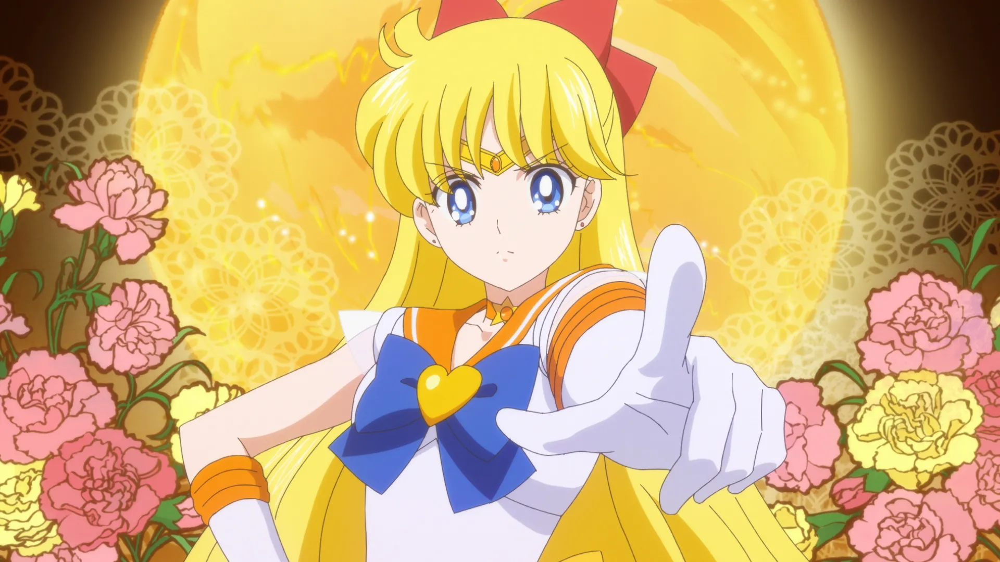

Sailor Venus 
Sailor Venus
Minako Aino (愛野 美奈子, Aino Minako, called Mina Aino in the original English dub) is a fourteen-year-old perky dreamer. Minako first appears as the main protagonist of Codename: Sailor V.She has a companion cat called Artemis who works alongside Luna in guiding the Sailor Guardians. Minako transforms into Sailor Venus, the Guardian of Love and Beauty, and leads Sailor Moon's four inner Guardians, while acting as Sailor Moon's bodyguard and decoy because of their near-identical looks. She dreams of becoming a famous singer and idol, and attends auditions whenever she can. In contrast, in the live-action series, she is a successful J-pop singer (of whom Usagi, Ami, and Makoto are fans) and has poor health due to her anemia, choosing to isolate herself from the other Guardians as a result.